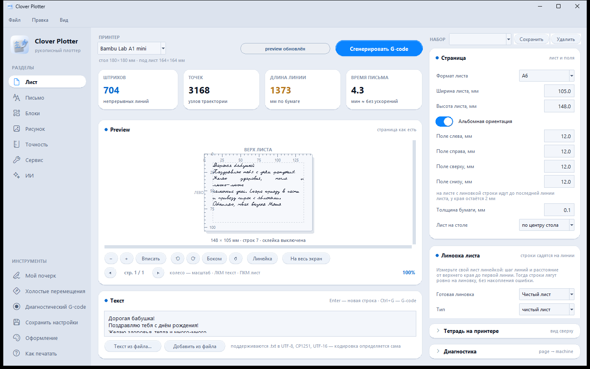
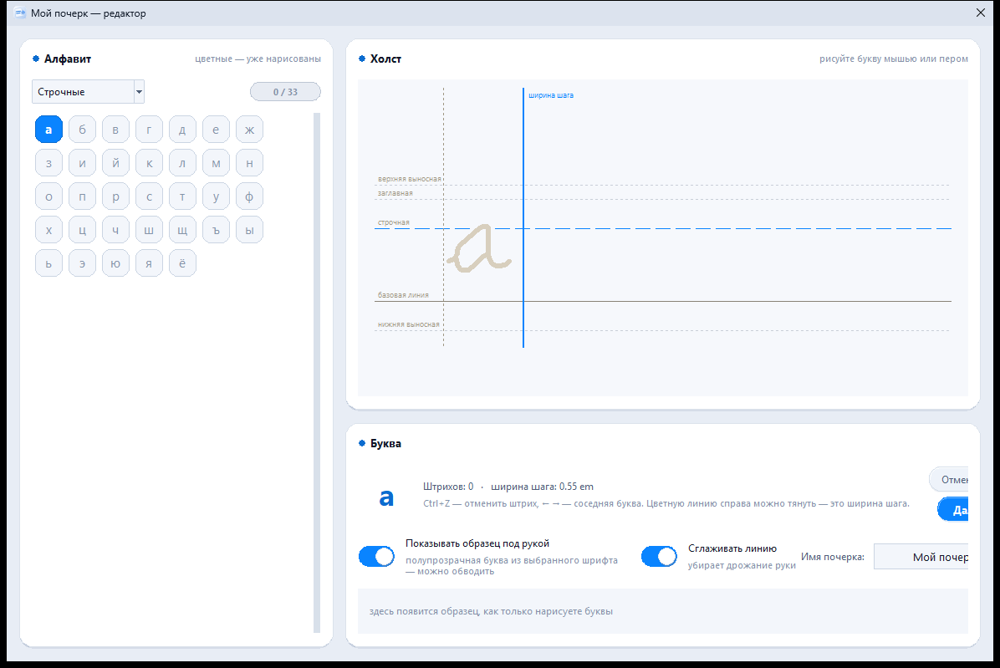

Почерк как от руки
Школьные прописи с соединениями букв, наклоном, лёгким дрожанием и разбросом размера — строки не выглядят напечатанными.
рукописный плоттер
Превращает 3D-принтер в плоттер: ручка вместо сопла пишет ваш текст почерком, как от руки. Формулы, таблицы, рисунки и даже ваш собственный почерк — что видно в Preview, то и окажется на бумаге.
Слева — разделы и инструменты, в центре — лист как он есть и текст под ним, справа — настройки выбранного раздела. Оформление — матовое стекло: по умолчанию светлое, ещё пять цветов в «Вид → Оформление».

Принтер остаётся принтером: в держатель вместо пластика ставится ручка, а Clover Plotter готовит G-code, по которому она пишет.
Закрепите ручку рядом с соплом и выберите свой принтер. Машинные координаты программа берёт из профиля — вводить их не нужно.
Напишите или вставьте текст, выберите почерк, лист и линовку. Можно добавить формулы, таблицы, фигуры и рисунок.
Лист показан как он есть, в миллиметрах. Текст и блоки двигаются мышью прямо на листе, полоса замечаний подскажет, если что-то выходит за край.
«Сгенерировать G-code» или Ctrl+G — и файл готов. Отправьте его на принтер как обычную печать.
От открытки бабушке до конспекта с формулами: всё, что пишут от руки, Clover Plotter напишет ручкой на вашем принтере.
Школьные прописи с соединениями букв, наклоном, лёгким дрожанием и разбросом размера — строки не выглядят напечатанными.
Нарисуйте буквы мышью, пером планшета или пальцем — программа сохранит их как шрифт и сразу будет им писать.
LaTeX в тексте: дроби, корни, степени, индексы и химические уравнения — рукописные, того же размера, что и строка.
Фото превращается в контурный рисунок пером — нейросетью прямо на компьютере. Штриховка, волны, размер и место на листе.
Абзацы, таблицы, линии, рамки и десятки фигур — каждая на своём месте. Выравнивание, дублирование и порядок письма по листу.
Клетка, линейка, поля и готовые шаблоны тетрадей: строки садятся ровно на линии, без накопления ошибки.
Лист в миллиметрах, линейка, поворот, масштаб колесом. Вид сверху на стол показывает, где лежит тетрадь и где начнётся письмо.
Длинный текст сам делится на страницы. Сохраните все сразу или только нужную — номер выбирается прямо в окне.
Задача по фото — решение пишется от руки, формулы отдельно. Локально через Ollama или LM Studio, или с вашим ключом OpenAI, Gemini, DeepSeek, Qwen.
Скорость письма, холостого хода и ускорения, подъём пера и карта времени холостых перемещений — видно, где теряются минуты.
.txt в UTF-8, CP1251 или UTF-16 — кодировка определяется сама. Наборы настроек и профили принтеров сохраняются в файлы.
Каждый файл проверяется перед сохранением, а диагностический G-code с крестами по углам помогает выставить перо и лист.
Выберите модель — размеры стола, начало координат и скорости подставятся сами. Профиль можно подправить, сохранить в файл и передать другу.
Профили Creality, ELEGOO и Sovol проверены программно, на этих принтерах ещё не испытаны — первый лист пишите под присмотром. Подходит и другой принтер с подвижным столом: импортируйте или настройте свой профиль.

Откройте «Мой почерк», нарисуйте буквы на холсте с направляющими — и Clover Plotter будет писать ими. Хоть мышью, хоть пером графического планшета, хоть пальцем на сенсорном экране.
Один файл — внутри всё нужное: ни Python, ни регистрации, ни ключа активации.
Clover-Plotter.exe, 80 МБ — программа целиком в одном файле.
Установка не нужна. Если Windows покажет «Система Windows защитила ваш компьютер» — «Подробнее» → «Выполнить в любом случае»: у программы нет платной подписи.
Выберите принтер, лист и почерк. Настройки сохраняются в профиле Windows и подхватятся в новой версии сами.
Порядок действий перед запуском файла. Займёт пару минут.
Перо в держатель пока не ставьте.
Вручную, через меню принтера: обычный homing по X, Y и Z.
Повыше по оси Z, чтобы было удобно положить лист и поставить ручку.
На столе принтера — так, чтобы он не сдвигался во время письма.
Вылет кончика пера — примерно на 12,00 мм ниже среза сопла: так заложено в профиле.
Ручка должна касаться бумаги в меру: в профиле заложен преднатяг 0,35 мм.
Первый лист — под присмотром: при опасном движении остановите печать.
В G-code заложена команда G28 X Y: она отправляет принтер «домой» только по осям X и Y. Ось Z пропущена намеренно, чтобы принтер случайно не раздавил перо о стол во время калибровки.
Вылет и прижим каждый подбирает под свой держатель и ручку. Числа выше — ориентир из профиля по умолчанию; их можно поменять в профиле принтера.
В основе — улучшенная версия bambu-plotter-fast-preview:
Да. Без рекламы, подписок, регистрации и ключа активации.
Любая, которую можно надёжно закрепить в держателе рядом с соплом: гелевая, шариковая, капиллярная, даже карандаш — для него в «Сервисе» есть настройки нажима и износа грифеля. Вылет и прижим задаются в профиле принтера и проверяются диагностическим G-code.
Clover Plotter не греет стол и сопло и не подаёт пластик — только перемещения. Ось Z при homing пропускается, чтобы не раздавить перо, а перед сохранением G-code проверяется на выход за границы стола. Первый лист всё равно пишите под присмотром.
Нет. Всё, включая нейросеть для рисунков, работает на компьютере. Интернет нужен только облачному ИИ-помощнику, если вы сами его выберете вместо локального.
Только в памяти, пока программа открыта. При смене провайдера или адреса поле очищается, чтобы ключ не ушёл другому сервису. Без телеметрии.
В профиле Windows: %APPDATA%\BambuPlotterWriter — там настройки, наборы, ваш почерк и импортированные шрифты. Новая версия подхватит их сама.
Ctrl+G — сгенерировать G-code, Ctrl+1…Ctrl+7 — разделы слева, Ctrl+Z / Ctrl+Y — отменить и повторить. Работают и в русской раскладке.